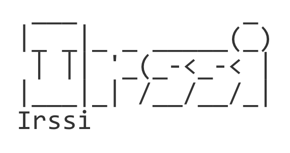
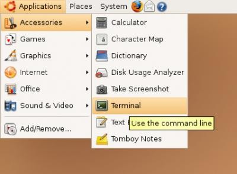
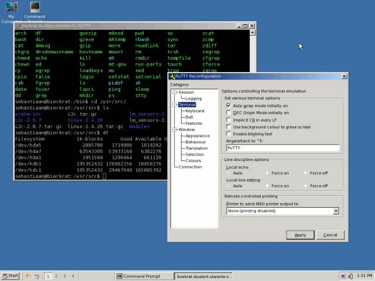
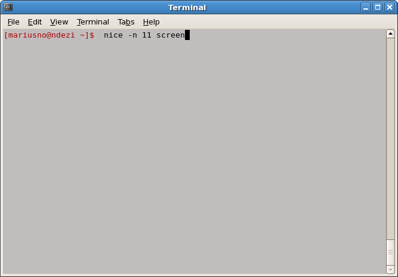
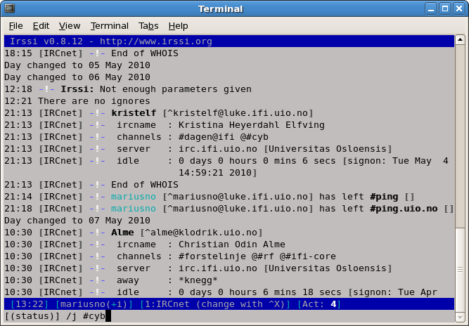

Noen gamle #cyb-notater, gjengitt her for dem som leter etter dem.

Hva er screen, nice og irssi
screen er et terminalprogram som lar deg kjøre prosesser selv etter at du er logget ut, eller nettlinjen har falt ned. Prosessen blir liggende og kjøre i en virtuell terminal på serveren.
nice: UiO har implementert IJK (Idle Job Killer), som vil drepe denne prosessen etter en stund. Dette løses ved å sette en spesiell nice-verdi til prosessen, som gjør at IJK ikke vil drepe prosessen.
irssi er en terminalbasert IRC-klient. Grunnen til at man bruker dette er fordi at man i kombinasjon med screen kan ligge tilkoblet konstant til IRC-nettverket. Fordelene er at man har en konstant backlog, samt at man ikke plager allerede påloggede brukere med stadige pålogginger. Man vil også kunne beholde sin operator-status (@).
Opprette screen
Åpne en terminal:

Eller last ned PuTTY om man bruker Windows:

Koble til med SSH til en server du husker (safir, rubin, smaragd, diamant):
$ ssh safir.ifi.uio.no
Opprett en screen som ikke blir avsluttet av IJK:
$ nice -n 11 screen

Start irssi:
$ irssi
Du er nå koblet på irssi og kan koble til #cyb med følgende kommando:
/join #cyb

Neste gang du nå skal hente opp igjen din screen
SSH til serveren du valgte i første del:
$ ssh safir.ifi.uio.no
Koble til din screen med:
$ screen -rd
Hvis din screen ikke dukker opp igjen, sjekk om du er på riktig server eller om serveren har blitt restartet i senere tid ($ screen -ls). Gjør om igjen fra første del.
(For å avslutte en screen-økt for godt, skriv C-a :quit.)
Bruk av irssi
For å bytte kanalfane, trykk kombinasjonen: Alt + tall (f.eks. Alt + 1).
Alternativt: Esc + tall (f.eks. Esc + 1).
Alternativt: Ctrl + N eller Ctrl + P.
Alternativt: skriv /win + tall (f.eks. /win 2).
For å liste brukere i kanalen, skriv:
/names
For å scrolle opp/ned: PgUp/PgDn.
For å starte en privat samtale:
/msg hei
Bla eller hopp deg så frem til vinduet samtalen ble startet i.